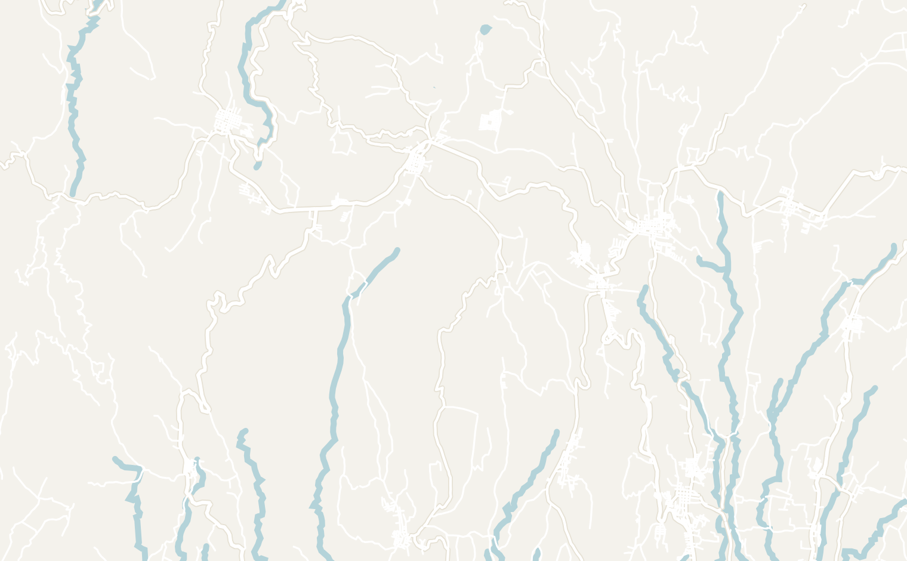
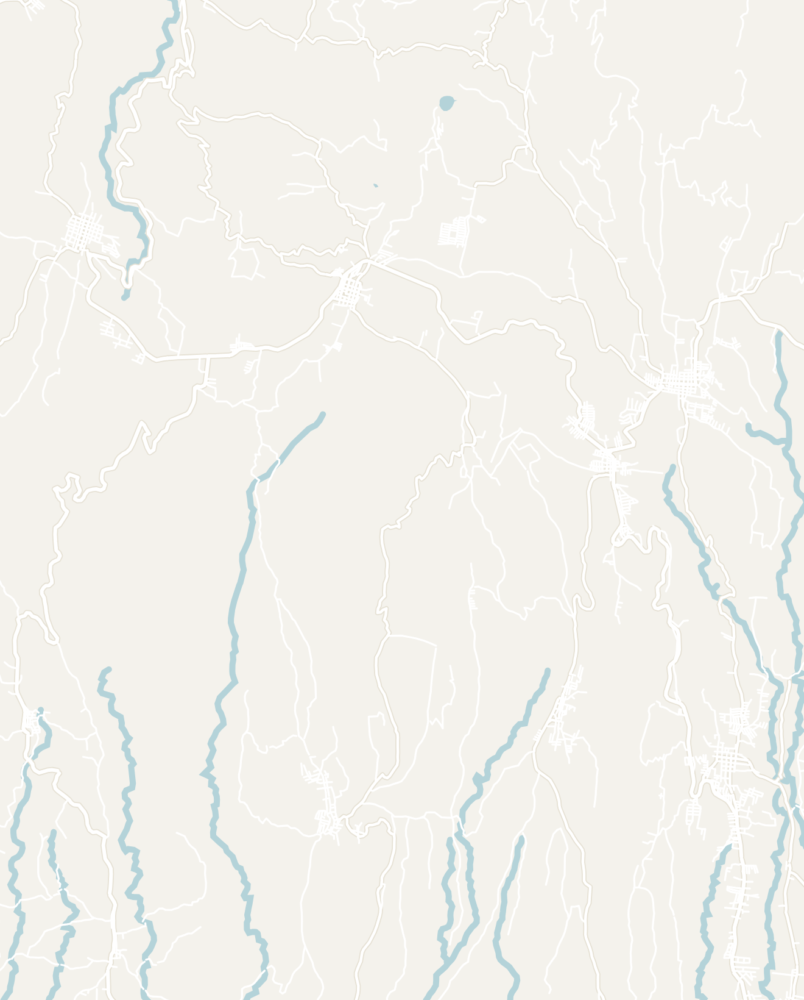

Ruta de las Flores
Located in the western highlands of El Salvador, Ruta de las Flores is one of the most important cultural sites in El Salvador. Meaning "Route of the Flowers" in Spanish, the scenic path connects five small historic colonial towns. The towns are nestled deep in the country's lush green highlands surrounded by coffee plantations, waterfalls and wildlife. Each town has its own charming appeal with cobblestone streets, colorful murals and churches. From November to April, the route is covered with vibrant, blooming wildflowers.
This is the perfect stop in El Salvador to get a taste of El Salvadoran culture and a glimpse into its colonial past. I would recommend spending 2 to 3 days here to see the key sites (1 to 2 days for exploring the towns and an extra day for each day trip). However, it is also possible to visit these towns as a day trip from Santa Ana, El Tunco or San Salvador. Don't miss the famous 7 Waterfalls Hike, as this was my absolute favorite experience in El Salvador.


Double-tap to open in Google Maps
Overview of the Towns
La Ruta de las Flores is composed of five small towns: from North to South, they are Concepción de Ataco, Apaneca, Salcoatitán, Juayúa and Nahuizalco. The towns are located very close by: only about a 35-minute drive from end to end, with each town about 10 to 15 minutes from one another.
I would recommend basing yourself in either Juayúa or Ataco and using them as a base to explore the rest of the route. The towns feature classic Spanish colonial architecture, each with its own distinct character. Each town is centered around a small (often white) cathedral with a town square around it. Note that the towns are all very small and you can easily walk around each in 30 minutes.
I spent one full day dedicated to exploring the towns and visited four of the five towns. This felt like the right amount of time to me since the towns were small.
Juayúa

Founded in 1577 and today home to roughly 70,000 people, Juayúa is the most popular town on La Ruta de las Flores. Most of the hotels and hostels on the historic route are based here. The main things to do here are explore the cathedral and town square and take a day trip to the 7 Waterfalls Tour (more details further down in this guide).
Every Saturday and Sunday starting around 11am, the town hosts the Juayúa Food Festival (Feria Gastronómica), where many local street food vendors set up stands around the town square. This is a great opportunity to try a variety of local El Salvadoran dishes.
Ataco


Ataco is the most vibrant town on La Ruta de las Flores with colorful murals, street art and a lush green central park. Similar to many of the towns, Ataco is centered around the blue and white Concepción de Ataco church which overlooks Fray Rafael Fernandez Park. Located not far away is the whimsical and memorable Mural Concepción de Ataco. The small colonial town is filled with similarly vibrant artwork celebrating the long history of the region dating back to the 1500s. If you're looking for a souvenir to take home, the center of Ataco is lined with many gift shops selling local handmade crafts.

Coffee historically accounted for over 50% of El Salvador's exports, with much of it coming from this particular region of El Salvador. Ataco is the perfect place to sample world-class coffee or take a tour to the plantations where it is grown. I made a stop at Axul Artesanías, a cafe and art shop known for its colorful exterior. They served high-quality local coffee and there was a lovely outdoor patio perfect for relaxing. If you're looking for a coffee plantation tour, El Carmen Estate offers an hour-long coffee plantation tour for $7.

One final stop in Ataco is El Mirador de La Cruz. Located a short 10-minute walk from the central park, El Mirador de La Cruz provides a sweeping panoramic view overlooking the town and the surrounding lush green valley covered in trees. There is no entrance fee. It is a bit difficult to find, so it is worth asking some locals for directions in advance.
Apaneca


My favorite town on La Ruta de las Flores was definitely Apaneca. While Ataco was more colorful and flashy, Apaneca was a lot quieter and had a small-town feel that drew me in. Leading up to the main square were charming walking streets lined with roses and hedges. It led to the Parque Central de Apaneca where there was a local man selling oranges. We strolled around the town for a couple hours and stopped by Plaza Turistica Apanhecatl for lunch at a food stall run by a local abuela.
Next to Apaneca is the oddly named Cafe Albania. Known for its instagram (in)famous rainbow slide, hedge maze, pendulum swing and tandem bikes, I've written more about the adrenaline-fueled outdoor park further down in this guide.
How to get around


Given the short distance between the towns, the towns are very easy to get around. Here are some popular ways to get around:
- Chicken Bus - anyone who has traveled around Central America will be familiar with the infamous Chicken Bus! Found all around the region, these retrofitted old American school buses are the locals' choice of transportation since they are cheap, convenient and at times uncomfortable. However, they are something that everyone should experience at least once in El Salvador. Bus #249 connects all five towns, comes every 20 minutes in both directions and only costs 50 cents per trip
- Motorcycle - for more adventurous travelers, I highly recommend renting a motorcycle. Rick's Hostel offers smaller Honda Navi motorcycles for $15 per day. It was a very fun way to get around the five towns with the freedom to stop along the many viewpoints. The roads were in very good condition and there was little traffic to be worried about. Even as an inexperienced motorcyclist, I felt perfectly safe and La Ruta de las Flores would be a good place to learn
- Ridesharing - Uber and inDrive are both available in El Salvador. Rides should be relatively cheap (approximately $3 - $6) given the short distances between the towns
What to Do There
Beyond exploring the colonial towns, there are many amazing activities you can do from La Ruta de las Flores. Many people just take a day tour to the area from San Salvador or El Tunco to see the towns. However, in my opinion, these day trips and activities are the real reason to spend more time in the area.
7 Waterfalls Hike


In most waterfall tours, you're standing far away on an observation deck and just admiring the view, but not this one… the 7 Waterfalls (Siete Cascadas) tour in Juayúa is real up-close and personal. It was 3 hours full of adrenaline in the Salvadoran jungles: trekking through the jungle, swinging on vines, wading through streams and climbing waterfalls. It was by far my favorite experience in El Salvador: a day filled with adventure and some of the most beautiful waterfalls I've ever seen.
Offered from Santa Ana or Juayúa, the 7 Waterfalls Hike is located only 20 minutes outside of the town of Juayúa. I signed up for a tour from Rick's Hostel in Juayúa that only cost $15. There are also many other providers that offer the same tour. The tour takes about 3 to 4 hours and you'll be able to see 7 waterfalls and 2 chorros (jets in Spanish) including the famous Los Chorros de la Calera.
I've writtten a separate article extensively describing my experience here.
Cafe Albania


I'm not usually one for cheesy touristy theme parks, but I had a blast at Cafe Albania! Situated next to Apaneca on a coffee farm, the outdoor adventure park offers over 10 different rides, including the rainbow slide made famous on social media. It also offers a a life-size hedge maze, a sky mirror, suspended tandem bicycling and you can even do a tight-rope walk in a suspended hamster wheel! Rides range from $1 - $10 and it doesn't get too busy like amusement parks at home.
El Salto de Malacatiupán


Hotsprings + waterfalls - ¿por que no los dos?
With a water temperature of 100°F (or 37°C), El Salto de Malacatiupán is a stunning waterfall with a river flowing through it that feels like a natural jacuzzi. There are no official tours leading to the waterfalls and not many tourists know about them, making them an undiscovered gem in the region. The hotspring waterfalls are a unique phenomenon that I only experienced in El Salvador and are highly worth the trip.
Located near the border with Guatemala, the waterfalls lie about an hour outside Juayúa or Santa Ana and are easily accessible by local bus, car, Uber or moped. The trip can be done in a half day including transport. The waterfalls are at the end of a dirt road with a small restaurant at the entrance. The entrance fee was only $1.50 and collected by a local security guard.
The water is true jacuzzi temperature! There were not many other people when I was there, just some locals washing clothes down the river. The waterfalls were also surrounded by a lush green forest which made it very serene and relaxing.
Santa Teresa Hotsprings Party
Going to leave photos out for this one...
I signed up for the Hot Springs Party at my hostel not knowing what we were in for (or where we were going)! It started at Rick's Hostel and apparently happens once a week on Thursday evening. We loaded into a van and drove roughly 40 minutes to Santa Teresa Hot Springs.
Entrance was about $10. The party was located at one main hotspring with a huge stage in front. We were the only group of gringos there and were surrounded by locals the whole time. There was live music (reggaeton, of course), a DJ, dancing and eventually some of the locals went up and did karaoke. At first, the locals were all staring at the huge group of gringos in the middle of the pool, but they warmed up to us and we partied with them!
The Santa Teresa Hot Springs is a huge complex with a variety of pools at different temperatures and a mud bath. Apparently the place is a relaxing spa during the day... and you can also stay there for about $50 per night if you're looking for some rest and relaxation.
Other Activities
La Ruta de las Flores has plenty more to offer beyond what I was able to cover. Here are some other fun activities you can do with links below for further research:
- Nahuizalco Night Market (Mercado Nocturno) - a nightly food market in the town of Nahuizalco. A great alternative to the Juayúa Food Festival if you're not in town during the weekend
- Coffee Tour in Ataco at El Carmen Estate - if you're interested in trying El Salvador's world-class coffee and exploring a local coffee plantation, this tour is only $7 and lasts just over an hour
- ATV Tour from Apaneca - for a fun way to explore the area, this ATV tour explores Apaneca and also stops by Laguna Verde, a volcanic crater lake nearby
- Viewpoints along the route - Take a minute to appreciate the nature surrounding the towns. There are a few vistas along the road such as Mirador Ruta de las Flores that are worth a quick stop if you're passing by

Where to Eat
There are many great restaurants along La Ruta de las Flores to try local Salvadoran food and have coffee fresh from the local plantations.
Juayúa
Pupusas y Panes Rellenos Sugey - this is one of the most popular restaurants among locals in Juayúa. Try their Panes Rellenos, a shredded chicken sandwich overflowing with grilled veggies and served with a side of hot sauce. If you're feeling hungry, go for the Pupusa Loca, which is a whopping 3 pound pupusa the size of 3 pupusas combined!

Restaurante Don Timmy - if you're looking for a break from El Salvadoran food, Restaurante Don Timmy serves some very solid Mexican food
Bloom Coffee and Bourbon Coffee Roasters - amazing coffee shops utilizing fresh, locally-sourced beans. These shops are more western-style where you can get cold brew and lattes.
Pro tip: although El Salvador grows some of the world's best coffee, most local spots serve watery instant coffee so go to more western-style shops if you're looking for good coffee.
Ataco
Axul Artesanías - a charming cafe connected to a souvenir shop that supports local artists. I spent a couple hours here and enjoyed a lovely cold brew on their outdoor patio and garden area. It is hard to miss with the vibrant cat mural on the outside. There is a second location in Apaneca as well

Apaneca
Plaza Turistica Apanhecatl - right off the main square, there is a small plaza with many small comedors, usually run by an abuela and her family. Each one offered a variety of plates to choose from. I decided to stop at Las Ninfas which served a delicious chicken soup with tortillas

Yulu Ne Gascu - a local mom-and-pop shop selling pastries and frozen-chocolate covered bananas (a popular snack in El Salvador)
Getting There
La Ruta de las Flores is centrally located from the most popular tourist destinations in El Salvador: 1 hour from Santa Ana, 1.5 hours from San Salvador and 2 hours away from El Tunco.
Easy ways to get around are:
- Rent a car - Distances are small in El Salvador so a car will provide you with the flexibility to explore quickly
- Bus - the bus system in El Salvador is extremely well-connected with connections to Santa Ana (#238), San Salvador (#205, then #249) and El Tunco (#287, then #249). The website CentroCoasting was the best resource for bus schedules in El Salvador
- Ridesharing - Uber and inDrive are also available, but it may take a while to get a ride for long distances
- Scooter / Motorcycle - this is a popular way to get between Santa Ana and Juayua. Rick's Hostel will help you out with luggage transport if you're planning to make this journey
- Tourist shuttle from Antigua, Guatemala - If you're coming from Guatemala, there is a direct tourist shuttle from Antigua to Juayúa with the journey taking 5 hours
Want to visit, but short on time? Ruta de las Flores can also be visited as a day tour from San Salvador. Try to include an additional tour that visits the 7 Waterfalls (Siete Cascadas) as they were a highlight for me.
Places to Stay
There are a variety of accomodation options in La Ruta de las Flores, but here are two hostels that I would recommend in Juayúa.
Rick's Hostel - With a big courtyard and lots of activities, I enjoyed my time at Rick's Hostel. The staff was very helpful in organizing motorcycle rentals and they plan a lot of activities everyday of the week (Waterfall Tour and Hot Springs Party). I will be honest that this hostel was on the older side and very bare-bones (old bunks and cold showers), but I met some great people here and had a good time.
Hostel Samay - This is a newer hostel in town, owned by a very friendly guy named Oscar. He was dedicated to making sure we all had a good time in El Salvador, even if we weren't his guests. The rooms are brand new, and they were even building an entire new wing to the hostel when I was there. We stopped by for their Asado, a weekly barbeque popular in Latin America. They served some amazing steak and potatoes.